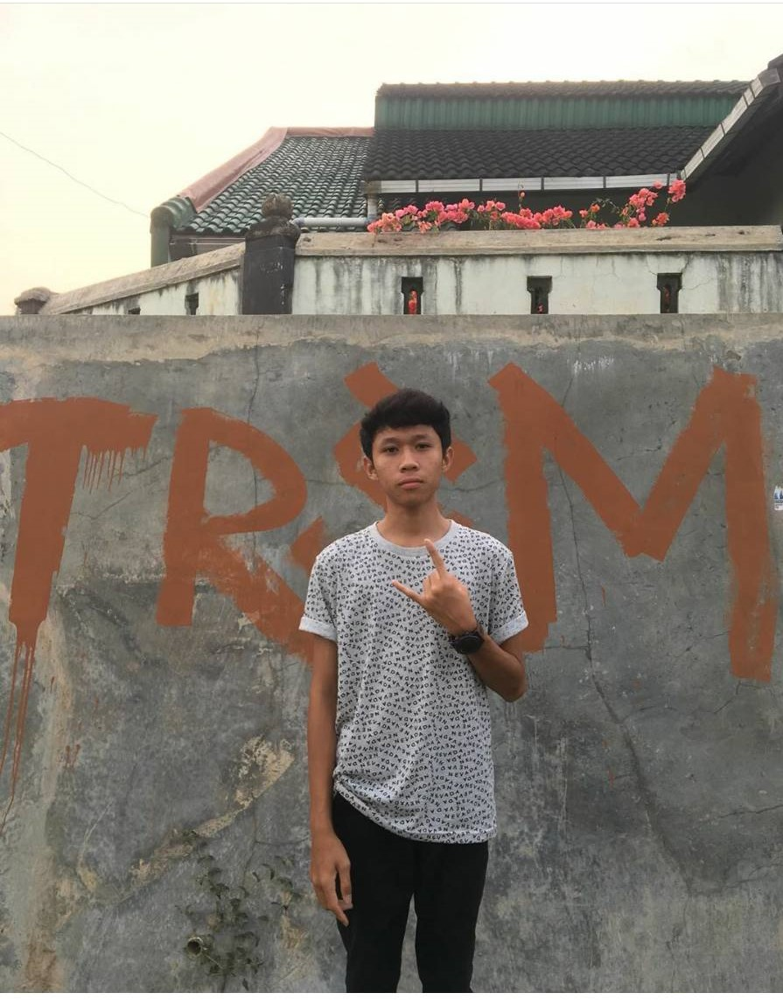
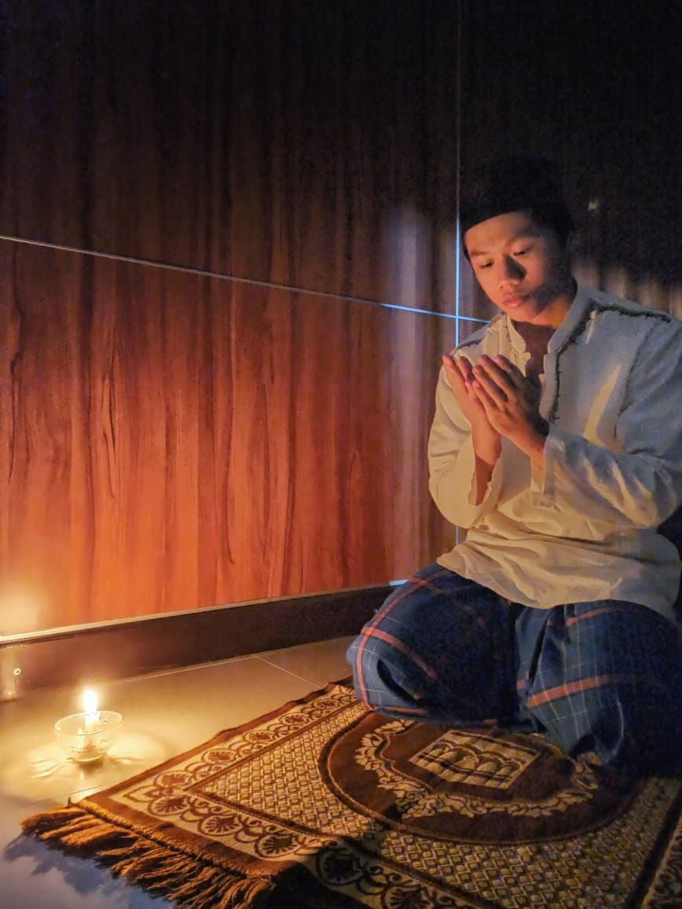
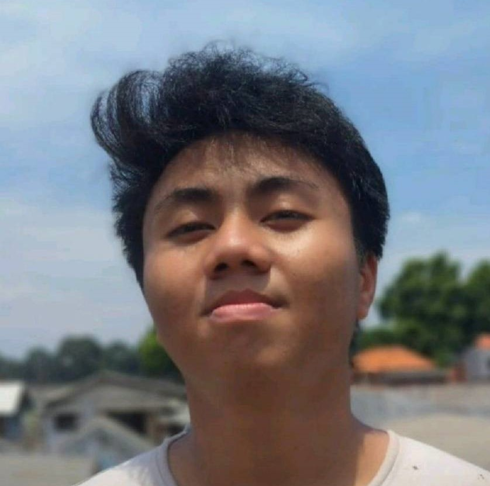

Man In Charge
1.Hafizh Raihan J
TGL lahir : 5 Maret 2003
Nama Bapak : Syarial Jayanegara
"I wanna be a fakboi" ya, kata itulah yang paling tepat untuk mendeskripsikan bocah yang satu ini. kesehariannya dipenuhi oleh kegiatan stalking para ukhti di sosmed. saat ini, Dia sedang jatuh cinta pada Beautiful in white, Wina Adelia yang merupakan siswi SMAN 67.Sekarang, dia sedang berusaha mati-matian untuk mendapatkan hatinya Wina. Dan Juga bocah ini merupakan salah satu anggota penting dari Pukimaik karena dia menyediakan rumahnya untuk dijadikan basecamp.
2.Sayid Alwiyan Syah

TGL lahir : 1 Februari 2003
Nama Bapak : Sayid Muhadhar
Sayid atau kerap diapnggil Arabicc Merupakan Bocah keturunan Arab yang juga senantiasa merelakan rumahnya untuk dijadikan tempat bermain,makan dan bahkan tidur bagi Pukimaik. Ia Terlahir sebagai seorang Aceh yang gokil tapi tajir. bocahnya terbilang lugu, tapi sangat sabar. Kisah percintaannya kurang beruntung. Ia ditinggalkan dan dicampakan oleh seseorang dengan inisial "Mwh" tanpa ada sebab yang jelas. Ia sudah berusaha untuk mencoba memperbaiki hubungan di antara mereka, tapi si Mwh malah menjauhinya, memblokir akun Sayid di sosial media, dan bahkan melupakannya. Kasihan Sayid,hingga sekarang Ia belum bisa move on dari Mwh dan menjadi sadboy akut.
3.Dzul Fikar Ali
TGL lahir : 1 Januari 2003
Nama Bapak : Marjuki
Nama Emak : Fenita
Bocah yang satu ini merupakan bentuk nyata perwujudan dari kata "biadab". Bagaimana tidak, mukanya menunjukan cina, beragama Islam dengan status kewarganegaraan Indonesia, tetapi dalam hidupnya mengimplementasikan paham komunis. di rumah kerjaannya nyusahin orang tua,di sekolah tidur mulu, Nyubit nipple dan sinep orang mulu, ngatain orang mulu. padahal kedudukannya lebih rendah dari pribumi.
Tetapi, Terlepas dari itu semua, sosok Dzul Fikar ini sangatlah humble. Ia terkenal dikalangan guru sebagai Murid yang teladan, ilmu agamanya juga lumayan untuk lulusan MTs dan bahkan, Ia mendapatkan suara terbanyak dalam Pemilihan Ketua Osis Periode 2019/2020. Mukanya yah... begitulah , apa adanya. sayangnya, Fikar tidak menyadari bahwa statusnya sebagai Ketua OSIS hanyalah tipu belaka semata. Sebenarnya ia dijadikan babu oleh oknum-oknum dengan mengatasnamakan sekolah. Kesehariannya sangatlah sibuk dipenuhi kegiatan 'OSIS'.
4.Ferdi Juliantoro
TGL lahir : 5 Maret 2003
Nama Emak : Tusiyem
Nama lainnya adalah Bulong.Ia merupakan bocah kelahiran Gunung Kidul,Yogyakarta namun dengan tampang Ambon. Entah darimana paras ambon itu ia dapatkan, tetapi atas dasar itu pula dia dipanggil "bulong" yang ia percayai artinya adalah "berkulit gelap". Ia adalah bocah yang menyukai olahraga, khususnya Futsal,Badminton dan lari. Ia terbilang jago di bidangnya, namun terlalu malu untuk mengakuinya.
Setiap sekolah ia selalu diantar dengan motor mio nya atau CBR 150 kakaknya. tetapi ketika pulang ia menggunakan Transhalim. terkadang ia tidak memiliki uang sisa juga lupa untuk membawa kartu jak-lingko. Karena iba dan kasihan, Pukimaik sering mengantarnya pulang kerumah dengan selamat, hitung hitung nambah kegiatan diluar rumah. Namun, karena terlalu sering seperti itu, Bulong menjadi lupa diri. tiap berpergian minta dijemput atau dianter pulang. kalau gak punya uang buat naik angkot, dipalakinnya semua anggota pukimaik. oleh karena itu, dia mendapat julukan lagi dari Pukimaik ,yaitu iuran.
by Rahfiwk 😀